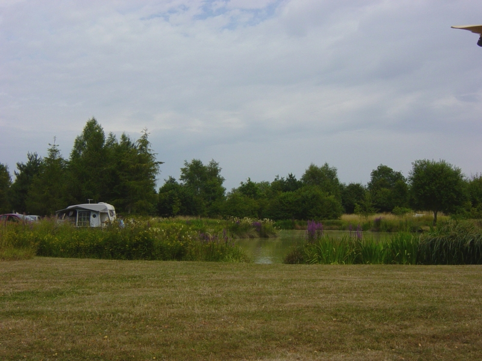
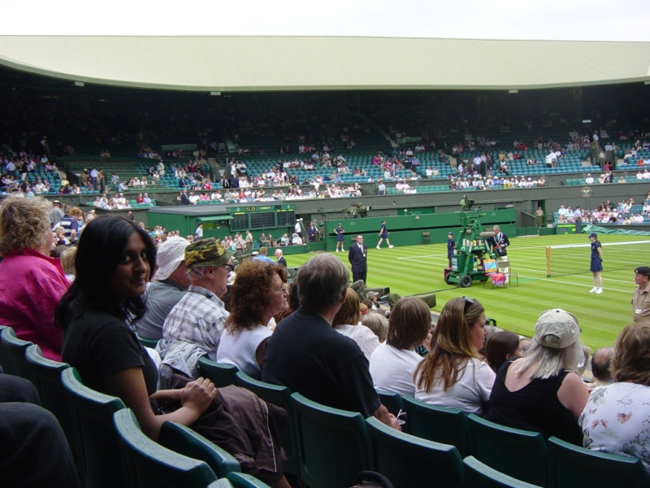

Archive for the ‘Items that do not fit in other categories’ Category
Sailing with hotliquid
Friday, August 24th, 2007{kind=link}
{kind=link}
Chapter One Restaurant
Saturday, October 14th, 2006I had ballontine of free range chicken and serano ham, foiegras parfait and a veloute for starter. The ballontine was very nice.
For main course I had roast saddle of fallow venison, pithivier of haunch braised red cabbage & sloe gin sauce.
For dessert, hot chocolate fondant & pain d’epices ice cream.
Food was tasty and well presented.
Only down side was the wine we had with the meal which was an alsace riesling and was a bit dull.
Also decided to sample a cheap and expensive dessert wine side by side in the form of a glass of Tesh Riesling Ice Wine 2002 (�95 bottle or �11 per glass) and a glass of Saunternes, Madame de Rayne, 1998 (�20 bottle or �4 glass). The cheaper wine was simply very sweet whereas the expensive dessert wine had many layers and was not as sweet.
Cost was about �130 for two which is pretty good value considering the quality of food.
Birmingham trip
Saturday, October 7th, 2006{kind=link}
Took coach (National express from London Victoria for �14 each return) to Birmingham for the Grand Designs Live exhibition at NEC. Also spent a few hours in Selfridges.
Alicante Spain
Friday, September 22nd, 2006Well deserved lay in till about 10:30am. Left hotel at about 11:00am for some breakfast and then back to hotel for checkout before 12:00pm. Wandered around old town on way to Santa Barbara Castle. The castle is accessible via a tunnel through the mountain to a lift which takes you 320metres up through the mountain and you pop up inside the castle. Great views of Alicante, great place to chill out for a couple of hours before flying back.
Waited half hour for airport bus and it took about 30 minutes to get to airport this time.
Alicante airport is actually rather good and I was actually happy that the plane was delayed by 30 minutes.
Shops are good and plentiful, 1 litre of Jack Daniels can be had for �15 so snapped two up! Spent some time in the Ars cafe, and the haagen das ice cream bar - rediscovered vanilla icecream, had mine with hundreds and thousands.
Overall I rather like Alicante as a city, its not too big and it would be very easy for me to come back as in just a couple of days I know my way around it.
Alicante, Spain
Thursday, September 21st, 2006{kind=link}
Up at 2:45 and left for Gatwick at 3:30. Seems everyone else gave Gatwick a miss today so we had over an hour to wander around duty free.
Flew to Alicante Aeropuerto, Spain 07:30 Thursday (plane half hour late). Hired car using Holidayautos.co.uk. The local operator was Aurego. The airport is well layed out and car hire is easy to find. Car washer bottle was empty which does make me question the general car maintenance standards, Spain is also rather dusty so discovering that the washer bottle is empty on the motorway is a pain. The drive to Javea took a couple of hours (1 hour trying to get out of Alicante), signage in Spain takes a bit of getting used to! Purpose of trip was to install VOIP phone for the company, this all worked first time without any problems which is amazing as I was expecting something to go wrong. The electric in spain is 230v so UK electrical items worked. The modem I took over was a UK purchased BT Voyager 2110 wireless. The ADSL settings are standard for each country so reconfiguring the modem with standard Spanish settings and inputting the telefonica username and password and it connected first time.
Javea is very nice and had a nice spag bol in a restaurant overlooking the sea on the avenida del mediterraneo.
Yamini spent sometime in a beach bar whilst I was working.
Then drove back to Alicante, slightly different more scenic route back via benissia (???).
Drove to airport to drop car off but realised that I had not filled up petrol. Then drove off looking for a petrol station but ended up in the centre of Alicante before we found one. Change of plan, park up, check into hotel (Hesperia Lucentum) which was very central modern businesslike hotel. Freshened up before filling up petrol tank and dropping off the car. Airport bus back from airport to alicante was 1 euro and waited about 2 minutes (lucky as they are every 45 minutes) and it took about 15 minutes.
Did not bother going back to hotel but did some shopping, some beers and food near harbour.
Nantes
Friday, September 15th, 2006Flew to Vannes and then drove to Nantes on 15th, flew back 17th!
Veeraswamy
Saturday, September 9th, 2006Meal cost �145 for two. Wine Riesling Dr Loosen Blue slate estate �25 was notably nice.
We had three courses and a dessert wine and coffees.
Very well presented delicious food but the prawn curry was not as good as the ones I get at home.
Honey Pot Camping
Saturday, July 22nd, 2006
Honey Pot Camping site (www.honeypotcamping.co.uk)
We had plot number 31 with a view across the fishing lake.
{kind=link}
Wimbledon 2006
Tuesday, June 27th, 2006Very good seats near commentary box on centre court.
Order of play was:
Miss M Yuan vs Mrs J.Henin-Hardenne
R. Federer vs R.Gasquet
Andre Agassi vs B.Pashanski
N.Massu vs Andy Murray

{kind=link}